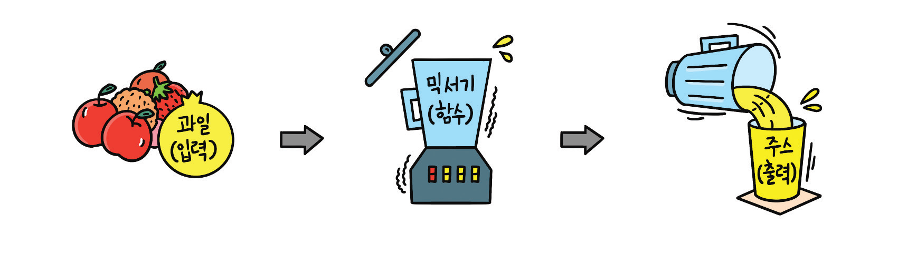
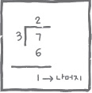
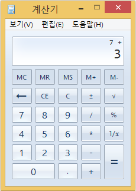
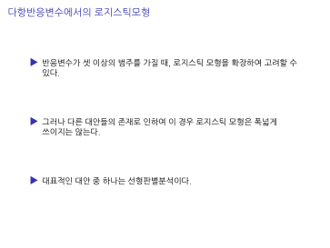

class
About
class
Categories
All
(12)
analysis
(1)
code
(1)
news
(2)

제4장. 파이썬 기초 IV
이번 실습에서는 프로그램 입출력에 대한 기초에 대해서 학습 할 예정이다. 위성자료 및 지구환경과학 자료 입출력을 위한 필수 프로그래밍 코드 학습 과정이다.

제1장. 파이썬 기초
이번 실습에서는 python programining 기초에 대해서 학습 할 예정이다.
제3장. 파이썬 기초 III
이번 실습에서는 프로그램 구조문에 대한 기초에 대해서 학습 할 예정이다. 위성자료 및 지구환경과학 데이터 프로그램 코딩에 필수적으로 사용되는 과정이다.

제5장. 파이썬 기초 V
이번 실습에서는 프로그램 클래스, 모듈에 대한 기초에 대해서 학습 할 예정이다. 위성자료 및 지구환경과학 자료처리를 위한 필수 프로그래밍 코드 학습 과정이다.
제1장. 파이썬 기초
이번 실습에서는 python programining 기초에 대해서 학습 할 예정이다. 기본적인 코딩 실습을 통해 파이썬 프로그램 코딩에 익숙해지는 단계이다.

노트4
분자에 있는 걸 계산했을때 제일 큰 상황에 대해 그 k에 대해 프레딕션하면 된다..? 예측을할때는 분자만 계산하면됨
김수환
과제리뷰
page_19.png
김수환
6장 linear Model Selection and Regularization
p가 너무 커지면 리니어 리그레이션이 적용이 어렵다? 변수가 너무 많으면 뭐가중요하고 중요하지 않은지 어려우니깐 잘 선택을 하자는 것 acc측면에서는 리니어 리그레이션보다 좋은게 많다 하지만 아직도 사용하는 이유은 해석이 쉽기 때문이다.
김수환
노트3
미국에 회사별로 임금의 격차가 있다. ㄴ 1)회사별로 임금의 차이가 존재한다. 또 2)직종별로의 차이가 있다. 이것이 시너지 효과라고 한다. 쉽게말해서 상호작용이라고 한다. 인퍼런스는 3번과 7번이 관심이크다. 예측은 5번에 관심이크다.
김수환
Post With Code
news
code
analysis
This is a post with executable code.
Oct 24, 2024
Harlow Malloc
Welcome To My Blog
news
This is the first post in a Quarto blog. Welcome!
Oct 21, 2024
Tristan O’Malley
데이터과학프로그래밍 (Python)1
##Python의 기초##
Jan 2, 2024
김수환
No matching items